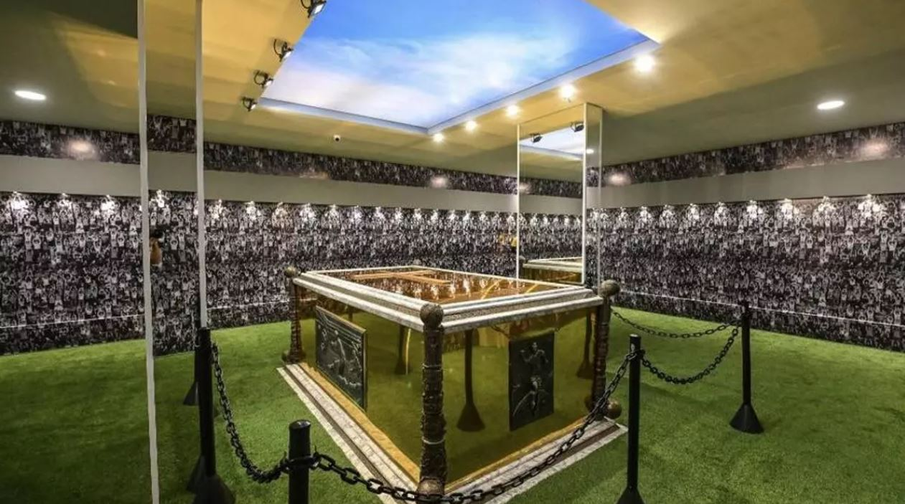

Pelé tiene sus restos en un sitio digno de un rey
Admiradores descubrieron este lunes el ataúd dorado en el que reposan los restos mortales de Pelé, fallecido en diciembre a los 82 años, en la apertura al público de su mausoleo en la ciudad brasileña de Santos, donde labró buena parte de su leyenda.
Estados Unidos ya paga las consecuencias de la crisis de la deuda
La tasa de interés de los bonos del Tesoro estadounidense a un mes subió el lunes hasta el 5,74 %, la más alto en al menos veinte años, frente al 3,29 % de mediados de abril.

Maduro afirma que Venezuela no volverá a la OEA
Maduro afirma que Venezuela no volverá a la OEA.El presidente de Venezuela, Nicolás Maduro, afirmó este lunes que su país no volverá a ser parte de la Organización de Estados Americanos (OEA), organismo del que se deslindó en 2019 por discrepancias.